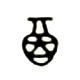
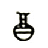
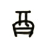
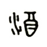
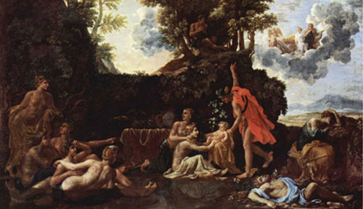

우리술 알기
술의 어원
술의 고유한 우리말은 수블/수불이었습니다.
수블>수을>술로 변천하였을 것입니다. 엣사람에게는 물이 난데없이 끓는 것이 신기하여 물에 불이 붙는다는 뜻으로 '수불'이라 하지 않았을까 생각됩니다





술의 기원은 전설로만 전해집니다.이집트에서는 천지의 신 이시스의 남편인 오시리스가 곡물신에게 맥주 만드는 것을 가르쳤다고 하고 그리스 신화에서는 디오니소스,로마에서는 바커스를 술의 시조로 말하고 있으며 구약성서에서는 노아가 최초로 술을 만든 사람이라고 합니다.
반면 동양의 경우 중국에서는 황제의 딸 의적이 처음으로 술을 빚었다고 합니다.
우리나라는 하백의 딸 유화가 해모수의 꾀에 속아 술에 만취한 후 해모수의 아이를 잉태하였는데 그가 주몽이라는 이야기가 있습니다. .
우리 문헌에 술에 관한 기록이 드물지라도 술이 단순히 중국에서 전래되었다고 생각해서는 안됩니다.